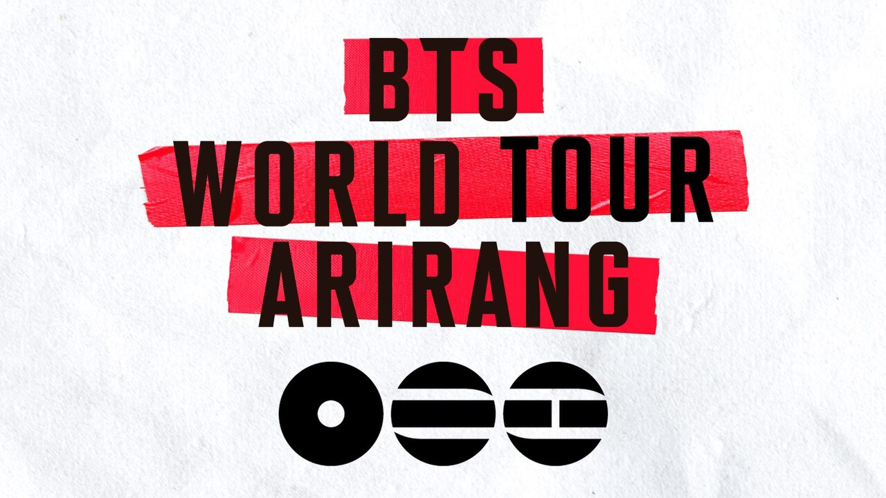

Efeito Jungkook
07/05/26
Idol do BTS vira personagem de livro infantil nos EUA.

Expansão do Gênero
10/05/26
O K-pop está se tornando mais popular e menos coreano do que nunca.

Experiência Swimside
15/05/26
Saiba tudo sobre a experiência que acontece em São Paulo.